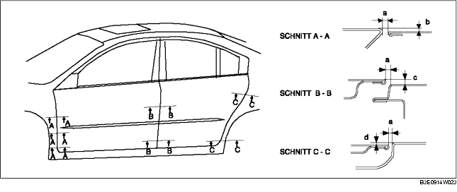

TÜR EINSTELLEN
B3E091158010W04
1. Den Abstand und die Höhendifferenz zwischen Vorder- bzw. Fondtür und Karosserie messen.
2. Die Montageschrauben von Scharnier oder Schließöse lösen und die Tür ausrichten.
-
Abstand, Sollwert
-
a: 2,7-4,7 mm {0,11-0,18 in}
-
b (oben): -1,0-1,0 mm {-0,040-0,039 in}
-
b (Mitte): -0,5-1,5 mm {-0,020-0,059 in}
-
b (unten): -0,3-1,3 mm {-0,027-0,051 in}
-
c (oben): -1,0-1,0 mm {-0,040-0,039 in}
-
c (unten): -0,5-1,5 mm {-0,020-0,059 in}
-
d (oben): -1,0-1,0 mm {-0,040-0,039 in}
-
d (unten): -0,5-1,5 mm {-0,020-0,059 in}

3. Die Blech- bzw. Sechskantschrauben festziehen.